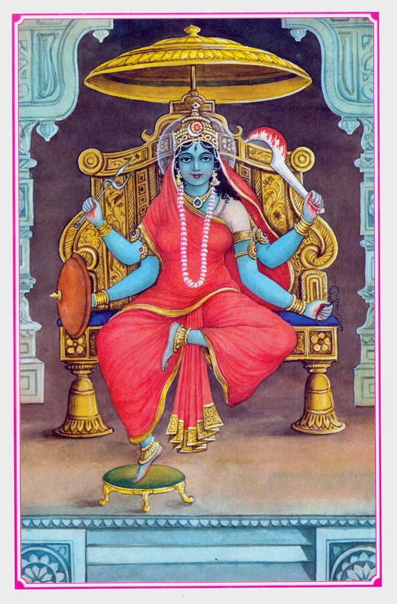
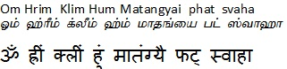
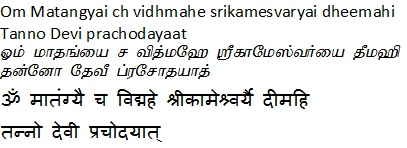

|
|||||
lordess sakthi
DASA MAHA VIDHYA
Matangi
|
 |
|
Goddess
Matanga is situated at the ninth place in ten great sciences
, usually Goddess! The following are related to Nana tribes.
Other famous names are named Chandelini or Maha-Pishachini ,
the goddess is famous and the relation of the Goddess is
different from the various mechanisms and theories . In the
light of magic or goddess power , the goddess is auspicious.
Speech is accomplished in accomplishment, music and other
fine arts; Nana is related to Siddha Vidyas; The goddess
systematics are versatile. The Goddess is able to subdue all
creatures and their foe enemies in Tribhuvan by mere word,
which is called hypnosis , Goddess! HypnotismAre the
dynasty. Goddess is associated with nature, animals, birds,
forests, forests, hunting etc., Goddess Matangi is highly
worshiped from tribal-tribes living in the forest . They are
given only by a different type of paraparabara, the goddess,
used by the lower and the masses. Goddess Matangi is also
known as the daughter of Matang Muni. The goddess is closely
related to the exquisite food items, as a result of which
the Goddess is known by the name of Chhadalini , who is not
required for fasting in the worship of the Goddess.
Despicable items are required for the worship of the
Goddess. The origin of the lost goddess was from Shiva and
Parvati 's choicest food. The worship of the Goddess was
first performed by Lord Vishnu , since it is considered as a
happy, prosperous, prosperous and highly endowed on a high
post. The Goddess is worshiped in Buddhism, but there was no
existence of Goddess in the beginning of Buddhism. In time,
goddess Buddhism became known as Matagiri . It is believed
that marital life is auspicious by the grace of Goddess, the
Goddess eliminates all the sufferings of the planet. The
origin of the Goddess is from the love of Shiva and Parvati
. Goddess Matanga is related to dead body or cremation
ground and cremation ground . Goddess holds Khaper, made
from Maha Shankh (human skull) or scalp on her right hand.
All gods and goddesses related to delusional, are related to
cremation grounds, cremation , chita, chita-bhasam, bone
etc., the habitat of supernatural powers are mainly in these
places. According to the system or system of learning, the
goddess Tantric Saraswati is known and the sarathi and chief
consultant of the Ratha of Sri Vidya Maha Tripurasundari. |
|
Beeja Mantra  Gayatri  |